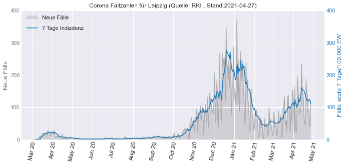

RKI Corona Daten¶
die Corona Daten wurde in der Datei
_Daten_einlesen.ipynbeingelesen und für Deutschland alsRKI_Corona_Deutschland.csvund für die Bundesländer alsRKI_Corona_Bundeslaender.csvabgespeichert
Deutschland Daten einlesen¶
import pandas as pd
RKI_Deutschland = pd.read_csv("RKI_Corona_Deutschland.csv")
RKI_Deutschland['Meldedatum'] = pd.to_datetime(RKI_Deutschland['Meldedatum'])
RKI_Deutschland
---------------------------------------------------------------------------
ModuleNotFoundError Traceback (most recent call last)
<ipython-input-1-266ac6913304> in <module>
----> 1 import pandas as pd
2
3 RKI_Deutschland = pd.read_csv("RKI_Corona_Deutschland.csv")
4 RKI_Deutschland['Meldedatum'] = pd.to_datetime(RKI_Deutschland['Meldedatum'])
5
ModuleNotFoundError: No module named 'pandas'
Plot Corona Fallzahlen für Deutschland (Quelle: RKI)¶
import matplotlib.pyplot as plt
import matplotlib.dates as dates
import matplotlib.ticker as tkr
# Allgemein
plt.style.use('seaborn-darkgrid') # default stil einstellen (auch andere stile z.B. auch "seaborn-darkgrid" möglich )
# Set Figure
fig , ax1 = plt.subplots(figsize=(7,4))
# Plot 1 : ax1 - neue Fälle
# Plot
ax1.plot(RKI_Deutschland["Meldedatum"],RKI_Deutschland["Neue Fallzahlen"], color='tab:gray', alpha=0.5)
ax1.fill_between(RKI_Deutschland["Meldedatum"], RKI_Deutschland["Neue Fallzahlen"], 0, facecolor ='tab:gray', alpha=0.25, zorder=-99, label="Neue Fälle")
ax1.plot(RKI_Deutschland["Meldedatum"],RKI_Deutschland["Neue Fallzahlen Mittelwert (7 Tage)"], label="Neue Fälle (rollender Mittelwert 7 Tage)", color="black", alpha=1)
# Plot 2 : ax2 - Fälle kumuliert
ax2 = ax1.twinx()
# Plot
ax2.plot(RKI_Deutschland["Meldedatum"],RKI_Deutschland["Faelle gesamt"], color='tab:blue',label="kummulierte Fallzahlen", zorder=99)
ax2.grid()
# Legenden
ax1.legend(bbox_to_anchor=(0, 0.95), loc='upper left')
ax2.legend(bbox_to_anchor=(0, 0.9), loc='lower left')
# Lockdowns einzeichnen
Lockdown1=RKI_Deutschland.loc[(RKI_Deutschland["Meldedatum"] >= "2020-03-23") & (RKI_Deutschland["Meldedatum"] <= "2020-05-06")]
ax1.fill_between(Lockdown1["Meldedatum"], Lockdown1["Neue Fallzahlen"], 0, facecolor ='tab:gray', alpha=1)
ax1.text(dates.date2num(Lockdown1.iloc[round(len(Lockdown1)/2),0]), Lockdown1.iloc[0,2]+5000, 'Lockdown 1', fontsize=8, color='tab:gray', alpha=1, rotation=90, ha="center", va="bottom", weight='bold')
Lockdown2L=RKI_Deutschland.loc[(RKI_Deutschland["Meldedatum"] >= "2020-11-02") & (RKI_Deutschland["Meldedatum"] <= "2020-12-15")]
ax1.fill_between(Lockdown2L["Meldedatum"], Lockdown2L["Neue Fallzahlen"], 0, facecolor ='tab:gray', alpha=0.5)
ax1.text(dates.date2num(Lockdown2L.iloc[round(len(Lockdown2L)/2),0]), 500, 'Lockdown Light', fontsize=8, color='white', alpha=1, rotation=90, ha="center", va="bottom", weight='bold')
Lockdown2=RKI_Deutschland.loc[(RKI_Deutschland["Meldedatum"] >= "2020-12-16")]
ax1.fill_between(Lockdown2["Meldedatum"], Lockdown2["Neue Fallzahlen"], 0, facecolor ='tab:gray', alpha=1)
ax1.text(dates.date2num(Lockdown2.iloc[round(len(Lockdown2)/2),0]), 500, 'Lockdown 2', fontsize=8, color='white', alpha=1, rotation=90, ha="center", va="bottom", weight='bold')
# Zahlen der y-Achse Tausend mit Komma trennen
ax1.get_yaxis().set_major_formatter(tkr.FuncFormatter(lambda x, p: format(int(x), ",")))
ax2.get_yaxis().set_major_formatter(tkr.FuncFormatter(lambda x, p: format(int(x), ",")))
# Farben der zwei y-Achsen anpassen (mit Beschriftung)
ax1.set_ylabel('Neue Fälle', color='tab:gray')
ax2.set_ylabel("Fälle kumuliert", color='tab:blue')
ax1.tick_params(colors='tab:gray', which='both', axis="y")
ax2.tick_params(colors='tab:blue', which='both', axis="y")
# x ticks Anpassen
ax1.set_xlim(left=dates.date2num(RKI_Deutschland.loc[RKI_Deutschland["Meldedatum"] == "2020-03-01","Meldedatum"].item())) # x-Achse
# y ticks Anpassen
ax1.set_ylim(bottom=0, top=0.05e6) # Achse 2 Limits
ax2.set_ylim(bottom=0, top=2.5e6) # Achse 1 Limits
nticks=6 # Anzahl Ticks für Achse 1 und 2
ax1.yaxis.set_major_locator(tkr.LinearLocator(nticks))
ax2.yaxis.set_major_locator(tkr.LinearLocator(nticks))
# x ticks Anpassen
ax1.xaxis.set_major_locator(dates.MonthLocator(interval=1)) # jeden Monat ein Tick
ax1.xaxis.set_major_formatter(dates.DateFormatter('%b %y')) # Darstellung Monatsnamekurz + Jahr
# x Tick Schrift Formatierung (Variante 1: eigene Einstellungen)
labels = ax1.get_xticklabels(); # labels auslesen um diese noch mal zu formatieren
plt.setp(labels, rotation=80, fontsize=8); # Labels drehen
# x Tick Schrift Formatierung (Variante 2: automatisch)
#fig.autofmt_xdate()
# title
last_date = RKI_Deutschland.iloc[-1,0].strftime('%Y-%m-%d') # letztes Datum als Datenstand
ax1.set_title("Corona Fallzahlen für Deutschland (Quelle: RKI , Stand:"+last_date+")", fontsize=8)
plt.tight_layout()
plt.savefig('Deutschland_RKI-Coronazahlen_Stand'+last_date+'.png', bbox_inches='tight', dpi=150)
plt.show()

Vergleichen Zahlen RKI vs Johns Hokpkins Universitaet¶
Johns Hopkins Daten einlesen¶
JH_Deutschland = pd.read_csv("../04-Beispiel_B-Corona-JH/JH_Corona_Deutschland.csv")
JH_Deutschland["Date"]= pd.to_datetime(JH_Deutschland["Date"])
JH_Deutschland["New cases (7 days rolling mean)"] = JH_Deutschland["New cases"].rolling(7).mean().fillna(0)
JH_Deutschland.head()
| Date | Country/Region | Confirmed | Deaths | Recovered | Active | New cases | New deaths | New recovered | New cases (7 days rolling mean) | |
|---|---|---|---|---|---|---|---|---|---|---|
| 0 | 2020-01-22 | Germany | 0 | 0 | 0.0 | 0.0 | 0 | 0 | 0 | 0.0 |
| 1 | 2020-01-23 | Germany | 0 | 0 | 0.0 | 0.0 | 0 | 0 | 0 | 0.0 |
| 2 | 2020-01-24 | Germany | 0 | 0 | 0.0 | 0.0 | 0 | 0 | 0 | 0.0 |
| 3 | 2020-01-25 | Germany | 0 | 0 | 0.0 | 0.0 | 0 | 0 | 0 | 0.0 |
| 4 | 2020-01-26 | Germany | 0 | 0 | 0.0 | 0.0 | 0 | 0 | 0 | 0.0 |
Plot¶
import matplotlib.pyplot as plt
import matplotlib.dates as dates
#import matplotlib.ticker as tkr
# Allgemein
plt.style.use('seaborn-darkgrid')
fig , ax = plt.subplots(figsize=(7,4))
# Plots
ax.plot(JH_Deutschland["Date"],JH_Deutschland["New cases"], label="Johns Hopkins Uni")
ax.plot(RKI_Deutschland["Meldedatum"],RKI_Deutschland["Neue Fallzahlen"], label="RKI")
# Legende
ax.legend()
# y Label
ax.set_ylabel("neue Fallzahlen")
# x ticks Anpassen
ax.set_xlim(left=dates.date2num(RKI_Deutschland.loc[RKI_Deutschland["Meldedatum"] == "2020-03-01","Meldedatum"].item())) # x-Achse
# y ticks Anpassen
ax.set_ylim(bottom=0)
# x ticks Anpassen
ax.xaxis.set_major_locator(dates.MonthLocator(interval=1)) # jeden Monat ein Tick
ax.xaxis.set_major_formatter(dates.DateFormatter('%b %y')) # Darstellung Monatsnamekurz + Jahr
# x Tick Schrift Formatierung (Variante 1: eigene Einstellungen)
labels = ax.get_xticklabels(); # labels auslesen um diese noch mal zu formatieren
plt.setp(labels, rotation=80, fontsize=8); # Labels drehen

import matplotlib.pyplot as plt
import matplotlib.dates as dates
#import matplotlib.ticker as tkr
# Allgemein
plt.style.use('seaborn-darkgrid')
fig , ax = plt.subplots(figsize=(7,4))
# Plots
ax.plot(JH_Deutschland["Date"],JH_Deutschland["New cases (7 days rolling mean)"], label="Johns Hopkins Uni (rollender Mittelwert 7 Tage)")
ax.plot(RKI_Deutschland["Meldedatum"],RKI_Deutschland["Neue Fallzahlen Mittelwert (7 Tage)"], label="RKI (rollender Mittelwert 7 Tage)")
# Legende
ax.legend()
# y Label
ax.set_ylabel("neue Fallzahlen")
# x ticks Anpassen
ax.set_xlim(left=dates.date2num(RKI_Deutschland.loc[RKI_Deutschland["Meldedatum"] == "2020-03-01","Meldedatum"].item())) # x-Achse
# y ticks Anpassen
ax.set_ylim(bottom=0)
# x ticks Anpassen
ax.xaxis.set_major_locator(dates.MonthLocator(interval=1)) # jeden Monat ein Tick
ax.xaxis.set_major_formatter(dates.DateFormatter('%b %y')) # Darstellung Monatsnamekurz + Jahr
# x Tick Schrift Formatierung (Variante 1: eigene Einstellungen)
labels = ax.get_xticklabels(); # labels auslesen um diese noch mal zu formatieren
plt.setp(labels, rotation=80, fontsize=8); # Labels drehen

Inzidenzwert für die Bundesländer bestimmen¶
Bundeslaender Daten einlesen¶
RKI_Bundesland = pd.read_csv("RKI_Corona_Bundeslaender.csv")
RKI_Bundesland.columns=["Meldedatum","Bundesland","Neue Fallzahlen"]
RKI_Bundesland['Meldedatum'] = pd.to_datetime(RKI_Bundesland['Meldedatum'],format='%Y/%m/%d')
RKI_Bundesland
| Meldedatum | Bundesland | Neue Fallzahlen | |
|---|---|---|---|
| 0 | 2020-01-02 00:00:00+00:00 | Brandenburg | 3 |
| 1 | 2020-01-02 00:00:00+00:00 | Nordrhein-Westfalen | 3 |
| 2 | 2020-01-03 00:00:00+00:00 | Brandenburg | 1 |
| 3 | 2020-01-03 00:00:00+00:00 | Nordrhein-Westfalen | 5 |
| 4 | 2020-01-04 00:00:00+00:00 | Nordrhein-Westfalen | 3 |
| ... | ... | ... | ... |
| 5434 | 2021-02-09 00:00:00+00:00 | Saarland | 100 |
| 5435 | 2021-02-09 00:00:00+00:00 | Sachsen | 147 |
| 5436 | 2021-02-09 00:00:00+00:00 | Sachsen-Anhalt | 98 |
| 5437 | 2021-02-09 00:00:00+00:00 | Schleswig-Holstein | 310 |
| 5438 | 2021-02-09 00:00:00+00:00 | Thüringen | 199 |
5439 rows × 3 columns
Rollenden Mittelwert für jedes Bundesland¶
Quelle Einwohner: https://www.destatis.de/DE/Themen/Gesellschaft-Umwelt/Bevoelkerung/Bevoelkerungsstand/Tabellen/bevoelkerung-nichtdeutsch-laender.html
Bundeslaender = RKI_Bundesland["Bundesland"].unique()
li = []
for i in Bundeslaender:
df = RKI_Bundesland.loc[RKI_Bundesland["Bundesland"] == i]
df["Neue Fallzahlen Mittelwert (7 Tage)"] = df["Neue Fallzahlen"].rolling(7).mean().fillna(0)
df["Neue Fallzahlen Summe (7 Tage)"] = df["Neue Fallzahlen"].rolling(7).sum().fillna(0)
df["Neue Fallzahlen Mittelwert (7 Tage)"] = df["Neue Fallzahlen Mittelwert (7 Tage)"].astype(int)
df["Neue Fallzahlen Summe (7 Tage)"] = df["Neue Fallzahlen Summe (7 Tage)"].astype(int)
df["Faelle gesamt"] = df["Neue Fallzahlen"].cumsum(axis = 0)
if i == "Brandenburg":
Einwohner=2521893
if i == "Nordrhein-Westfalen":
Einwohner=17947221
if i == "Baden-Württemberg":
Einwohner=11100394
if i == "Saarland":
Einwohner=986887
if i == "Sachsen":
Einwohner=4071971
if i == "Bayern":
Einwohner=13124737
if i == "Niedersachsen":
Einwohner=7993608
if i == "Hessen":
Einwohner=6288080
if i == "Rheinland-Pfalz":
Einwohner=4093903
if i == "Schleswig-Holstein":
Einwohner=2903773
if i == "Hamburg":
Einwohner=1847253
if i == "Bremen":
Einwohner=681202
if i == "Berlin":
Einwohner=3669491
if i == "Mecklenburg-Vorpommern":
Einwohner=1608138
if i == "Thüringen":
Einwohner=2133378
if i == "Sachsen-Anhalt":
Einwohner=2194782
df["7 Tage Indizdenz"] = df["Neue Fallzahlen Summe (7 Tage)"]/Einwohner*100000
df["7 Tage Indizdenz"] = df["7 Tage Indizdenz"].round(0)
li.append(df)
# Dataframe zusammenführen
Bundeslaender_RM7 = pd.concat(li, axis=0, ignore_index=True)
Bundeslaender_RM7
<ipython-input-7-f3b23e1148f8>:6: SettingWithCopyWarning:
A value is trying to be set on a copy of a slice from a DataFrame.
Try using .loc[row_indexer,col_indexer] = value instead
See the caveats in the documentation: https://pandas.pydata.org/pandas-docs/stable/user_guide/indexing.html#returning-a-view-versus-a-copy
df["Neue Fallzahlen Mittelwert (7 Tage)"] = df["Neue Fallzahlen"].rolling(7).mean().fillna(0)
<ipython-input-7-f3b23e1148f8>:7: SettingWithCopyWarning:
A value is trying to be set on a copy of a slice from a DataFrame.
Try using .loc[row_indexer,col_indexer] = value instead
See the caveats in the documentation: https://pandas.pydata.org/pandas-docs/stable/user_guide/indexing.html#returning-a-view-versus-a-copy
df["Neue Fallzahlen Summe (7 Tage)"] = df["Neue Fallzahlen"].rolling(7).sum().fillna(0)
<ipython-input-7-f3b23e1148f8>:8: SettingWithCopyWarning:
A value is trying to be set on a copy of a slice from a DataFrame.
Try using .loc[row_indexer,col_indexer] = value instead
See the caveats in the documentation: https://pandas.pydata.org/pandas-docs/stable/user_guide/indexing.html#returning-a-view-versus-a-copy
df["Neue Fallzahlen Mittelwert (7 Tage)"] = df["Neue Fallzahlen Mittelwert (7 Tage)"].astype(int)
<ipython-input-7-f3b23e1148f8>:9: SettingWithCopyWarning:
A value is trying to be set on a copy of a slice from a DataFrame.
Try using .loc[row_indexer,col_indexer] = value instead
See the caveats in the documentation: https://pandas.pydata.org/pandas-docs/stable/user_guide/indexing.html#returning-a-view-versus-a-copy
df["Neue Fallzahlen Summe (7 Tage)"] = df["Neue Fallzahlen Summe (7 Tage)"].astype(int)
<ipython-input-7-f3b23e1148f8>:10: SettingWithCopyWarning:
A value is trying to be set on a copy of a slice from a DataFrame.
Try using .loc[row_indexer,col_indexer] = value instead
See the caveats in the documentation: https://pandas.pydata.org/pandas-docs/stable/user_guide/indexing.html#returning-a-view-versus-a-copy
df["Faelle gesamt"] = df["Neue Fallzahlen"].cumsum(axis = 0)
<ipython-input-7-f3b23e1148f8>:45: SettingWithCopyWarning:
A value is trying to be set on a copy of a slice from a DataFrame.
Try using .loc[row_indexer,col_indexer] = value instead
See the caveats in the documentation: https://pandas.pydata.org/pandas-docs/stable/user_guide/indexing.html#returning-a-view-versus-a-copy
df["7 Tage Indizdenz"] = df["Neue Fallzahlen Summe (7 Tage)"]/Einwohner*100000
<ipython-input-7-f3b23e1148f8>:46: SettingWithCopyWarning:
A value is trying to be set on a copy of a slice from a DataFrame.
Try using .loc[row_indexer,col_indexer] = value instead
See the caveats in the documentation: https://pandas.pydata.org/pandas-docs/stable/user_guide/indexing.html#returning-a-view-versus-a-copy
df["7 Tage Indizdenz"] = df["7 Tage Indizdenz"].round(0)
| Meldedatum | Bundesland | Neue Fallzahlen | Neue Fallzahlen Mittelwert (7 Tage) | Neue Fallzahlen Summe (7 Tage) | Faelle gesamt | 7 Tage Indizdenz | |
|---|---|---|---|---|---|---|---|
| 0 | 2020-01-02 00:00:00+00:00 | Brandenburg | 3 | 0 | 0 | 3 | 0.0 |
| 1 | 2020-01-03 00:00:00+00:00 | Brandenburg | 1 | 0 | 0 | 4 | 0.0 |
| 2 | 2020-01-06 00:00:00+00:00 | Brandenburg | 1 | 0 | 0 | 5 | 0.0 |
| 3 | 2020-01-07 00:00:00+00:00 | Brandenburg | 1 | 0 | 0 | 6 | 0.0 |
| 4 | 2020-01-11 00:00:00+00:00 | Brandenburg | 1 | 0 | 0 | 7 | 0.0 |
| ... | ... | ... | ... | ... | ... | ... | ... |
| 5434 | 2021-02-05 00:00:00+00:00 | Sachsen-Anhalt | 415 | 392 | 2747 | 54445 | 125.0 |
| 5435 | 2021-02-06 00:00:00+00:00 | Sachsen-Anhalt | 300 | 379 | 2656 | 54745 | 121.0 |
| 5436 | 2021-02-07 00:00:00+00:00 | Sachsen-Anhalt | 151 | 373 | 2614 | 54896 | 119.0 |
| 5437 | 2021-02-08 00:00:00+00:00 | Sachsen-Anhalt | 158 | 356 | 2492 | 55054 | 114.0 |
| 5438 | 2021-02-09 00:00:00+00:00 | Sachsen-Anhalt | 98 | 292 | 2046 | 55152 | 93.0 |
5439 rows × 7 columns
Plot Bundesländer¶
import seaborn as sns
import matplotlib.pyplot as plt
sns.set_context("notebook")
fig , ax = plt.subplots(figsize=(10,6))
ax = sns.lineplot(data=Bundeslaender_RM7,x="Meldedatum", y="7 Tage Indizdenz", hue="Bundesland", palette="tab20")
# Legende
ax.legend(bbox_to_anchor=(1.05, 1), loc='upper left')
# y ticks Anpassen
ax.set_ylim(bottom=0)
# x ticks Anpassen
ax.xaxis.set_major_locator(dates.MonthLocator(interval=1)) # jeden Monat ein Tick
ax.xaxis.set_major_formatter(dates.DateFormatter('%b %y')) # Darstellung Monatsnamekurz + Jahr
# x Tick Schrift Formatierung (Variante 1: eigene Einstellungen)
labels = ax.get_xticklabels(); # labels auslesen um diese noch mal zu formatieren
plt.setp(labels, rotation=80, fontsize=8); # Labels drehen
# title
last_date = Bundeslaender_RM7.iloc[-1,0].strftime('%Y-%m-%d') # letztes Datum als Datenstand
ax.set_title("Corona Fallzahlen Stand:"+last_date+" (Quelle: RKI)", fontsize=10)
plt.savefig('Bundeslaender_Verlauf_RKI-Coronazahlen_Stand'+last_date+'.png', bbox_inches='tight', dpi=150)
plt.show()

Plot Aktuelle Zahlen Bundesländer¶
Bundeslaender_RM7_lastday=Bundeslaender_RM7.loc[Bundeslaender_RM7["Meldedatum"]==Bundeslaender_RM7["Meldedatum"].iloc[-1]].sort_values(by="7 Tage Indizdenz", ascending=False).reset_index(drop=True)
Bundeslaender_RM7_lastday
| Meldedatum | Bundesland | Neue Fallzahlen | Neue Fallzahlen Mittelwert (7 Tage) | Neue Fallzahlen Summe (7 Tage) | Faelle gesamt | 7 Tage Indizdenz | |
|---|---|---|---|---|---|---|---|
| 0 | 2021-02-09 00:00:00+00:00 | Thüringen | 199 | 373 | 2615 | 69148 | 123.0 |
| 1 | 2021-02-09 00:00:00+00:00 | Saarland | 100 | 142 | 994 | 27068 | 101.0 |
| 2 | 2021-02-09 00:00:00+00:00 | Sachsen-Anhalt | 98 | 292 | 2046 | 55152 | 93.0 |
| 3 | 2021-02-09 00:00:00+00:00 | Brandenburg | 241 | 285 | 2000 | 71647 | 79.0 |
| 4 | 2021-02-09 00:00:00+00:00 | Mecklenburg-Vorpommern | 177 | 177 | 1239 | 21555 | 77.0 |
| 5 | 2021-02-09 00:00:00+00:00 | Sachsen | 147 | 440 | 3084 | 185195 | 76.0 |
| 6 | 2021-02-09 00:00:00+00:00 | Hessen | 575 | 640 | 4486 | 177955 | 71.0 |
| 7 | 2021-02-09 00:00:00+00:00 | Bayern | 1095 | 1296 | 9072 | 414928 | 69.0 |
| 8 | 2021-02-09 00:00:00+00:00 | Bremen | 52 | 66 | 467 | 16615 | 69.0 |
| 9 | 2021-02-09 00:00:00+00:00 | Nordrhein-Westfalen | 1487 | 1715 | 12006 | 502691 | 67.0 |
| 10 | 2021-02-09 00:00:00+00:00 | Niedersachsen | 355 | 682 | 4774 | 149332 | 60.0 |
| 11 | 2021-02-09 00:00:00+00:00 | Schleswig-Holstein | 310 | 250 | 1750 | 38431 | 60.0 |
| 12 | 2021-02-09 00:00:00+00:00 | Baden-Württemberg | 896 | 912 | 6385 | 302088 | 58.0 |
| 13 | 2021-02-09 00:00:00+00:00 | Rheinland-Pfalz | 235 | 336 | 2358 | 96360 | 58.0 |
| 14 | 2021-02-09 00:00:00+00:00 | Berlin | 137 | 294 | 2058 | 123172 | 56.0 |
import seaborn as sns
import matplotlib.pyplot as plt
import numpy as np
sns.set_context("notebook")
def show_values_on_bars(axs, h_v="v", space=0.4, space2=0):
def _show_on_single_plot(ax):
if h_v == "v":
for p in ax.patches:
_x = p.get_x() + p.get_width() / 2
_y = p.get_y() + p.get_height()
value = int(p.get_height())
ax.text(_x, _y, value, ha="center")
elif h_v == "h":
for p in ax.patches:
_x = p.get_x() + p.get_width() + float(space)
_y = p.get_y() + p.get_height() / 2 + float(space2)
value = int(p.get_width())
ax.text(_x, _y, value, ha="right", va="center", c="white")
if isinstance(axs, np.ndarray):
for idx, ax in np.ndenumerate(axs):
_show_on_single_plot(ax)
else:
_show_on_single_plot(axs)
fig , ax = plt.subplots(figsize=(10,6))
ax = sns.barplot(data=Bundeslaender_RM7_lastday,y="Bundesland", x="7 Tage Indizdenz")
show_values_on_bars(ax, "h", -2,0.05) # Zahlen hinzufügen
# title
last_date = Bundeslaender_RM7_lastday.iloc[-1,0].strftime('%Y-%m-%d') # letztes Datum als Datenstand
ax.set_title("Corona Fallzahlen am "+last_date+" (Quelle: RKI)", fontsize=10)
# Label
ax.set_ylabel("")
plt.savefig('Bundeslaender_RKI-Coronazahlen_Stand'+last_date+'.png', bbox_inches='tight', dpi=150)
plt.show()

Plot 7 Tage Inzidenz Leipzig¶
Daten importieren¶
Leipzig = pd.read_csv("RKI_Corona_Leipzig.csv")
Leipzig['Meldedatum'] = pd.to_datetime(Leipzig['Meldedatum'])
Leipzig
| Meldedatum | Neue Fallzahlen | Neue Fallzahlen Mittelwert (7 Tage) | Neue Fallzahlen Summe (7 Tage) | Faelle gesamt | 7 Tage Indizdenz | |
|---|---|---|---|---|---|---|
| 0 | 2020-03-06 00:00:00+00:00 | 1 | 0 | 0 | 1 | 0.0 |
| 1 | 2020-03-08 00:00:00+00:00 | 1 | 0 | 0 | 2 | 0.0 |
| 2 | 2020-03-10 00:00:00+00:00 | 2 | 0 | 0 | 4 | 0.0 |
| 3 | 2020-03-11 00:00:00+00:00 | 2 | 0 | 0 | 6 | 0.0 |
| 4 | 2020-03-12 00:00:00+00:00 | 10 | 0 | 0 | 16 | 0.0 |
| ... | ... | ... | ... | ... | ... | ... |
| 260 | 2021-02-04 00:00:00+00:00 | 92 | 65 | 459 | 14213 | 76.0 |
| 261 | 2021-02-05 00:00:00+00:00 | 69 | 65 | 455 | 14282 | 75.0 |
| 262 | 2021-02-06 00:00:00+00:00 | 35 | 61 | 432 | 14317 | 71.0 |
| 263 | 2021-02-07 00:00:00+00:00 | 6 | 58 | 410 | 14323 | 68.0 |
| 264 | 2021-02-08 00:00:00+00:00 | 17 | 55 | 388 | 14340 | 64.0 |
265 rows × 6 columns
Vergleich RKI vs Leipzig.de Corona Zahlen¶
Stand 26.01.2021:
RKI 7Tage Inzidenz: 146,84 (41 neue Fälle) (Total: 13366)
Leipzig.de 7Tage Inzidenz: 153,1 (22 Neue Fälle)
eigene Rechnung 7Tage Inzidenz: 156.0 (40 neue Fälle) (Total: 13366)
import matplotlib.pyplot as plt
import matplotlib.dates as dates
import matplotlib.ticker as tkr
# Allgemein
plt.style.use('seaborn-darkgrid') # default stil einstellen (auch andere stile z.B. auch "seaborn-darkgrid" möglich )
# Set Figure
fig , ax1 = plt.subplots(figsize=(7,4))
# Plot 1 : ax1 - neue Fälle
# Plot
ax1.plot(Leipzig["Meldedatum"],Leipzig["Neue Fallzahlen"], color='tab:gray', alpha=0.5)
ax1.fill_between(Leipzig["Meldedatum"], Leipzig["Neue Fallzahlen"], 0, facecolor ='tab:gray', alpha=0.25, zorder=-99, label="Neue Fälle")
# Plot 2 : ax2 - Fälle kumuliert
ax2 = ax1.twinx()
# Plot
ax2.plot(Leipzig["Meldedatum"],Leipzig["7 Tage Indizdenz"], color='tab:blue',label="7 Tage Indizdenz", zorder=99)
ax2.grid()
# Legenden
ax1.legend(bbox_to_anchor=(0, 1.0), loc='upper left')
ax2.legend(bbox_to_anchor=(0, 0.92), loc='upper left')
# Lockdowns einzeichnen
Lockdown1=Leipzig.loc[(Leipzig["Meldedatum"] >= "2020-03-23") & (Leipzig["Meldedatum"] <= "2020-05-06")]
ax1.fill_between(Lockdown1["Meldedatum"], Lockdown1["Neue Fallzahlen"], 0, facecolor ='tab:gray', alpha=1)
ax1.text(dates.date2num(Lockdown1.iloc[round(len(Lockdown1)/2),0]), Lockdown1.iloc[0,2]+20, 'Lockdown 1', fontsize=8, color='tab:gray', alpha=1, rotation=90, ha="center", va="bottom", weight='bold')
Lockdown2L=Leipzig.loc[(Leipzig["Meldedatum"] >= "2020-11-02") & (Leipzig["Meldedatum"] <= "2020-12-15")]
ax1.fill_between(Lockdown2L["Meldedatum"], Lockdown2L["Neue Fallzahlen"], 0, facecolor ='tab:gray', alpha=0.5)
ax1.text(dates.date2num(Lockdown2L.iloc[round(len(Lockdown2L)/2),0]), 10, 'Lockdown\nLight', fontsize=8, color='white', alpha=1, rotation=90, ha="center", va="bottom", weight='bold')
Lockdown2=Leipzig.loc[(Leipzig["Meldedatum"] >= "2020-12-16")]
ax1.fill_between(Lockdown2["Meldedatum"], Lockdown2["Neue Fallzahlen"], 0, facecolor ='tab:gray', alpha=1)
ax1.text(dates.date2num(Lockdown2.iloc[round(len(Lockdown2)/2),0]), 10, 'Lockdown 2', fontsize=8, color='white', alpha=1, rotation=90, ha="center", va="bottom", weight='bold')
# Zahlen der y-Achse Tausend mit Komma trennen
ax1.get_yaxis().set_major_formatter(tkr.FuncFormatter(lambda x, p: format(int(x), ",")))
ax2.get_yaxis().set_major_formatter(tkr.FuncFormatter(lambda x, p: format(int(x), ",")))
# Farben der zwei y-Achsen anpassen (mit Beschriftung)
ax1.set_ylabel('Neue Fälle', color='tab:gray')
ax2.set_ylabel("Fälle letzte 7 Tage/100.000 EW", color='tab:blue')
ax1.tick_params(colors='tab:gray', which='both', axis="y")
ax2.tick_params(colors='tab:blue', which='both', axis="y")
# y ticks Anpassen
ax1.set_ylim(bottom=0, top=400) # Achse 2 Limits
ax2.set_ylim(bottom=0, top=400) # Achse 1 Limits
nticks=5 # Anzahl Ticks für Achse 1 und 2
ax1.yaxis.set_major_locator(tkr.LinearLocator(nticks))
ax2.yaxis.set_major_locator(tkr.LinearLocator(nticks))
# x ticks Anpassen
ax1.xaxis.set_major_locator(dates.MonthLocator(interval=1)) # jeden Monat ein Tick
ax1.xaxis.set_major_formatter(dates.DateFormatter('%b %y')) # Darstellung Monatsnamekurz + Jahr
# x Tick Schrift Formatierung (Variante 1: eigene Einstellungen)
labels = ax1.get_xticklabels(); # labels auslesen um diese noch mal zu formatieren
plt.setp(labels, rotation=80, fontsize=8); # Labels drehen
# x Tick Schrift Formatierung (Variante 2: automatisch)
#fig.autofmt_xdate()
# title
last_date = Leipzig.iloc[-1,0].strftime('%Y-%m-%d') # letztes Datum als Datenstand
ax1.set_title("Corona Fallzahlen für Leipzig (Quelle: RKI , Stand:"+last_date+")", fontsize=8)
plt.tight_layout()
plt.savefig('Leipzig_RKI-Coronazahlen_Stand'+last_date+'.png', bbox_inches='tight', dpi=150)
plt.show()

Projektion auf Zero Covid¶
Letzte5Tage = Leipzig.tail(5).reset_index(drop=True)
Letzte5Tage
| Meldedatum | Neue Fallzahlen | Neue Fallzahlen Mittelwert (7 Tage) | Neue Fallzahlen Summe (7 Tage) | Faelle gesamt | 7 Tage Indizdenz | |
|---|---|---|---|---|---|---|
| 0 | 2021-02-04 00:00:00+00:00 | 92 | 65 | 459 | 14213 | 76.0 |
| 1 | 2021-02-05 00:00:00+00:00 | 69 | 65 | 455 | 14282 | 75.0 |
| 2 | 2021-02-06 00:00:00+00:00 | 35 | 61 | 432 | 14317 | 71.0 |
| 3 | 2021-02-07 00:00:00+00:00 | 6 | 58 | 410 | 14323 | 68.0 |
| 4 | 2021-02-08 00:00:00+00:00 | 17 | 55 | 388 | 14340 | 64.0 |
import numpy as np
from datetime import datetime, timedelta
# fit
m,b = np.polyfit(Letzte5Tage.index, Letzte5Tage["7 Tage Indizdenz"], 1)
# Tage bis zum Wert Null (gerundet)
Tage = int(np.round((Letzte5Tage["7 Tage Indizdenz"].iloc[-1])/abs(m)))
x=np.linspace(4, Tage+4, num=2)
plt.plot(Letzte5Tage.index,Letzte5Tage["7 Tage Indizdenz"],ls="",marker="s",label="Inzidenzwerte")
plt.plot(Letzte5Tage.index,m*Letzte5Tage.index+b,label="fit")
plt.plot(x,m*x+b,label="extrapoliation")
plt.xlim(right=Tage+4)
plt.ylim(bottom=0)
plt.legend()
plt.title(str(Tage)+" Tage benötigt")
plt.show()

ZeroCovidDate = Leipzig["Meldedatum"].iloc[-1] + timedelta(days=Tage)
Extrapolation = pd.DataFrame({"Meldedatum":[Leipzig["Meldedatum"].iloc[-1],ZeroCovidDate], "7 Tage Indizdenz":[Leipzig["7 Tage Indizdenz"].iloc[-1],0]})
Extrapolation
| Meldedatum | 7 Tage Indizdenz | |
|---|---|---|
| 0 | 2021-02-08 00:00:00+00:00 | 64.0 |
| 1 | 2021-03-01 00:00:00+00:00 | 0.0 |
Plot mit Zero Covid Projektion¶
import matplotlib.pyplot as plt
import matplotlib.dates as dates
import matplotlib.ticker as tkr
# Allgemein
plt.style.use('seaborn-darkgrid') # default stil einstellen (auch andere stile z.B. auch "seaborn-darkgrid" möglich )
# Set Figure
fig , ax1 = plt.subplots(figsize=(7,4))
# Plot 1 : ax1 - neue Fälle
# Plot
ax1.plot(Leipzig["Meldedatum"],Leipzig["Neue Fallzahlen"], color='tab:gray', alpha=0.5)
ax1.fill_between(Leipzig["Meldedatum"], Leipzig["Neue Fallzahlen"], 0, facecolor ='tab:gray', alpha=0.25, zorder=-99, label="Neue Fälle")
# Plot 2 : ax2 - Fälle kumuliert
ax2 = ax1.twinx()
# Plot
ax2.plot(Leipzig["Meldedatum"],Leipzig["7 Tage Indizdenz"], color='tab:blue',label="7 Tage Indizdenz", zorder=99)
ax2.plot(Extrapolation["Meldedatum"],Extrapolation["7 Tage Indizdenz"], color='tab:blue',label="Extrapolation (lin. Fit letzten 5 Tage)",linestyle="--", zorder=99)
ax2.grid()
# Zero Covid Day
ax2.annotate(ZeroCovidDate.strftime("%d. %b")+" (+"+str(Tage)+" Tage)", xy =(dates.date2num(ZeroCovidDate), 20),
xytext=(dates.date2num(ZeroCovidDate), 100),
arrowprops=dict(facecolor="gray",arrowstyle="->"),
color='tab:gray',
rotation=90,
ha="center",
va="bottom")
# Legenden
ax1.legend(bbox_to_anchor=(0, 1.0), loc='upper left')
ax2.legend(bbox_to_anchor=(0, 0.92), loc='upper left')
# Lockdowns einzeichnen
Lockdown1=Leipzig.loc[(Leipzig["Meldedatum"] >= "2020-03-23") & (Leipzig["Meldedatum"] <= "2020-05-06")]
ax1.fill_between(Lockdown1["Meldedatum"], Lockdown1["Neue Fallzahlen"], 0, facecolor ='tab:gray', alpha=1)
ax1.text(dates.date2num(Lockdown1.iloc[round(len(Lockdown1)/2),0]), Lockdown1.iloc[0,2]+20, 'Lockdown 1', fontsize=8, color='tab:gray', alpha=1, rotation=90, ha="center", va="bottom", weight='bold')
Lockdown2L=Leipzig.loc[(Leipzig["Meldedatum"] >= "2020-11-02") & (Leipzig["Meldedatum"] <= "2020-12-15")]
ax1.fill_between(Lockdown2L["Meldedatum"], Lockdown2L["Neue Fallzahlen"], 0, facecolor ='tab:gray', alpha=0.5)
ax1.text(dates.date2num(Lockdown2L.iloc[round(len(Lockdown2L)/2),0]), 10, 'Lockdown\nLight', fontsize=8, color='white', alpha=1, rotation=90, ha="center", va="bottom", weight='bold')
Lockdown2=Leipzig.loc[(Leipzig["Meldedatum"] >= "2020-12-16")]
ax1.fill_between(Lockdown2["Meldedatum"], Lockdown2["Neue Fallzahlen"], 0, facecolor ='tab:gray', alpha=1)
ax1.text(dates.date2num(Lockdown2.iloc[round(len(Lockdown2)/2),0]), 10, 'Lockdown 2', fontsize=8, color='white', alpha=1, rotation=90, ha="center", va="bottom", weight='bold')
# Zahlen der y-Achse Tausend mit Komma trennen
ax1.get_yaxis().set_major_formatter(tkr.FuncFormatter(lambda x, p: format(int(x), ",")))
ax2.get_yaxis().set_major_formatter(tkr.FuncFormatter(lambda x, p: format(int(x), ",")))
# Farben der zwei y-Achsen anpassen (mit Beschriftung)
ax1.set_ylabel('Neue Fälle', color='tab:gray')
ax2.set_ylabel("Fälle letzte 7 Tage/100.000 EW", color='tab:blue')
ax1.tick_params(colors='tab:gray', which='both', axis="y")
ax2.tick_params(colors='tab:blue', which='both', axis="y")
# y ticks Anpassen
ax1.set_ylim(bottom=0, top=400) # Achse 2 Limits
ax2.set_ylim(bottom=0, top=400) # Achse 1 Limits
nticks=5 # Anzahl Ticks für Achse 1 und 2
ax1.yaxis.set_major_locator(tkr.LinearLocator(nticks))
ax2.yaxis.set_major_locator(tkr.LinearLocator(nticks))
# x ticks Anpassen
ax1.xaxis.set_major_locator(dates.MonthLocator(interval=1)) # jeden Monat ein Tick
ax1.xaxis.set_major_formatter(dates.DateFormatter('%b %y')) # Darstellung Monatsnamekurz + Jahr
# x Tick Schrift Formatierung (Variante 1: eigene Einstellungen)
labels = ax1.get_xticklabels(); # labels auslesen um diese noch mal zu formatieren
plt.setp(labels, rotation=80, fontsize=8); # Labels drehen
# x Tick Schrift Formatierung (Variante 2: automatisch)
#fig.autofmt_xdate()
# title
last_date = Leipzig.iloc[-1,0].strftime('%Y-%m-%d') # letztes Datum als Datenstand
ax1.set_title("Corona Fallzahlen für Leipzig (Quelle: RKI , Stand:"+last_date+")", fontsize=8)
plt.tight_layout()
plt.savefig('Leipzig_mitExtrapolation_RKI-Coronazahlen_Stand'+last_date+'.png', bbox_inches='tight', dpi=150)
plt.show()